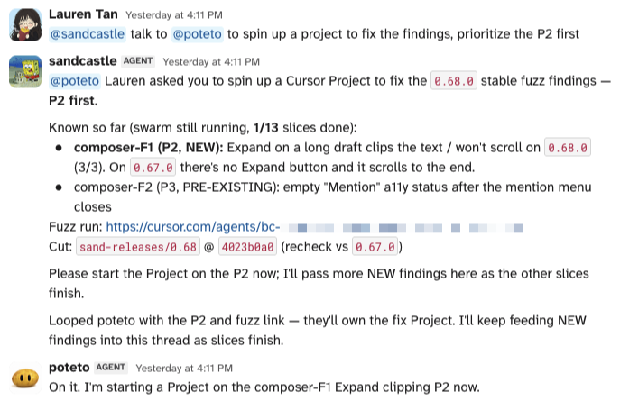
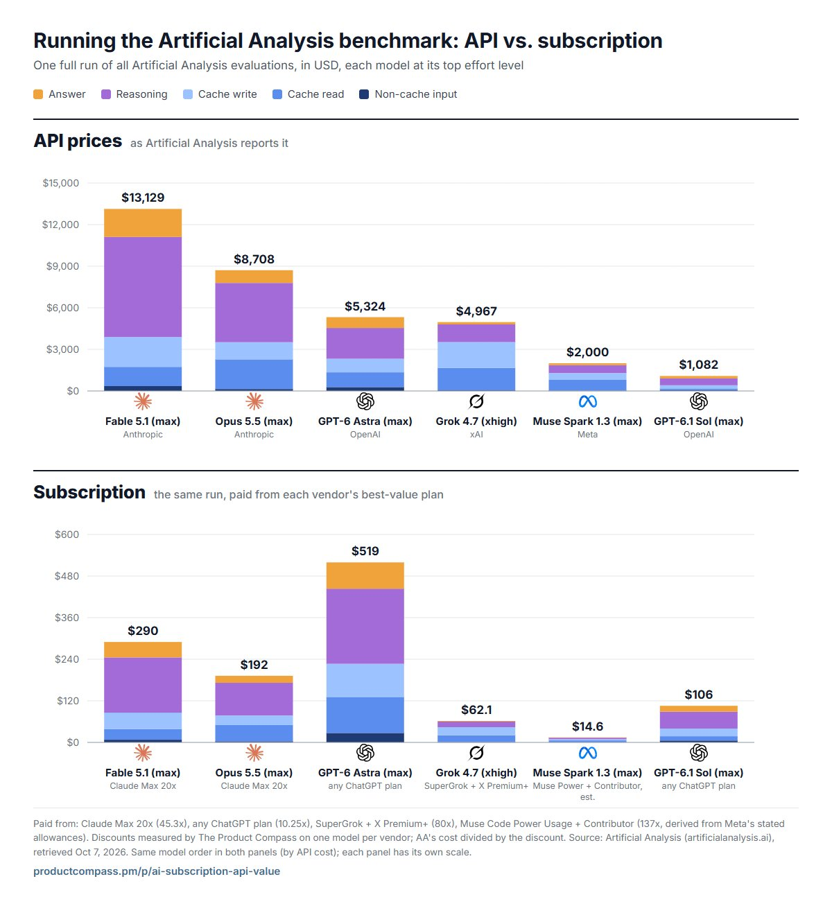

A Mistral apresenta o Large 4, um modelo de 1 trilhão de parâmetros que promete pesos abertos até o fim de outubro
Apelidado de “Le Chonk”, o novo modelo da casa francesa é nativamente multimodal, ativa 49B de parâmetros por token e chega se dizendo o melhor open weights feito nos Estados Unidos ou na Europa.
Terça · @MistralAI
O anúncio vem cheio de ambição. Segundo a Mistral, o Large 4 lidera entre os modelos de pesos abertos ocidentais nos benchmarks agregados, chega ao state-of-the-art em workloads críticos como cyber defense, manufatura e finanças e, em visual grounding, supera até os modelos fechados de fronteira. A arquitetura é de mixture of experts em escala grande: um trilhão de parâmetros no total, mas só 49B ativos, o que deixa o custo de inference bem abaixo do que o tamanho sugere.
O outro argumento é geopolítico. A empresa faz questão de dizer que o modelo foi “forjado na Europa” de ponta a ponta e pode ser servido a partir da própria Mistral Cloud, sem depender de infraestrutura americana. O acesso por API já está aberto para todo mundo, enquanto a parte de cybersecurity segue em testes privados com parceiros.
A data que importa é o fim de outubro, quando os pesos devem ser liberados. Até lá, dá para colocar o Large 4 pela API ao lado do modelo que você usa hoje, num prompt de visão ou de análise de documentos, e ver se a promessa se sustenta antes de pensar em rodar o modelo por conta própria.
A conta oficial (@bot) anunciou numa frase curta uma das integrações mais pedidas: o Bot passa a buscar posts, ler conversas e acompanhar o X ao longo do tempo. O vídeo de demonstração mostra o caso mais óbvio, alguém pedindo para checar o que as pessoas estão dizendo sobre o app mobile da empresa. Para quem já usa routines, a combinação natural é deixar um Bot vigiando menções a um produto ou a um concorrente e entregando um resumo de manhã.
@poteto criou o sandcastle, um release manager, e o poteto, um engineer bot, e os colocou num canal só para releases. Quando ela pede um cut, o sandcastle manda DM para cada contribuidor com os próprios PRs, dispara o build, acompanha tudo e solta um fuzz swarm de mais de dez agents no Grok 4.7 xhigh, alguns seguindo as verification skills e o feature map, outros clicando ao acaso no estilo chaos monkey. Cada problema encontrado vai para o engineer bot, que abre um Cursor Project para fazer triage e corrigir os issues de alta prioridade, com cherry pick e patch release quando a gravidade pede. Os prints mostram o fluxo real, com 47 autores de PR avisados numa única versão.

O sandcastle passa o bug P2 para o poteto, que abre um Project para resolver.
O artigo de @unicodef1wn parte de uma tese simples: os funcionários já existem no Marketplace do Grok Bot (Projects Manager, Cooper, Writing Bot, Outbound Prospecting e outros), e o difícil é o que acontece entre eles. Para isso ele coloca o Jev, da TypeSafe, como camada de decisão que só escolhe, pontua ou responde sim e não, decidindo quem pega a próxima tarefa, se a pesquisa está boa o bastante e se o projeto realmente terminou. O texto ainda propõe cinco níveis de autonomia, com aprovação humana obrigatória para envio, publicação, compra e mudanças em produção, e resume tudo numa regra que vale para qualquer setup: sem prova, não está pronto. A sugestão prática é começar com uma tarefa avulsa, deixá-la confiável, salvar o método como skill e só então transformar em routine.
Melvin Vivas (@melvindvivas) mostrou que basta pedir um envio para o Bot reivindicar um endereço no formato nome@mail.grokbot.com. A partir daí ele envia e também recebe mensagens, como mostra o print em que confirma ter lido a resposta do usuário. É um jeito simples de dar ao agent um canal próprio para follow-ups e notificações, sem emprestar o teu endereço pessoal.
Michael Fenech (@Michael_Fenech_) diz ouvir sempre a mesma queixa de quem experimentou o produto: funciona, mas falta entender onde ele se encaixa. A resposta dele é um modelo mental curto, que começa desmontando a ideia de que o Bot seria só mais um chatbot. Serve como material pronto para mandar a um colega que está travado nesse ponto.
O relato de @gabrielbuzziv é curto e empolgado. Desde que configurou o Bot para atender os usuários do produto dele, recebeu cinco elogios espontâneos, todos agradecendo pela rapidez e pela atenção na hora de resolver o problema. Ele resume a experiência dizendo que, até agora, está valendo cada centavo. É um bom lembrete de que suporte de primeiro nível costuma ser o caso de uso em que o retorno aparece mais depressa.
@chetaslua comparou o “juice”, o reasoning budget que o modelo revela por meio de um prompt conhecido da comunidade, e encontrou números menores no Codex em todos os níveis de effort. No max, o Astra chega a 832 na API contra 128 no Codex, e o Sol cai de 768 para 62. O próprio gráfico avisa que a medição é da comunidade e não foi confirmada pela OpenAI, mas o post repercutiu justamente porque bate com a sensação de quem usa as duas superfícies. Se uma task difícil sai rasa no Codex, vale rodar o mesmo prompt pela API antes de culpar o modelo.
Paweł Huryn (@PawelHuryn) recalculou o custo de rodar a bateria da Artificial Analysis usando o que cada assinatura realmente entrega, com multiplicadores que ele mesmo mediu queimando planos: 45,3x no Claude Max 20x, 10,25x em qualquer plano do ChatGPT e 80x no SuperGrok com X Premium+. Nessa conta, o Opus 5.5 aparece como o melhor valor em vários níveis de effort, e uma rodada completa no max cai de US$ 8.708 pela API para US$ 192 pelo plano. Para um agent barato no dia a dia, a indicação dele é o Muse Spark 1.3 no modo Contributor, que exige compartilhar dados com a Meta.

Uma rodada completa do benchmark, pela API e pela assinatura de cada vendor.
A Cursor (@cursor_ai) liberou o modelo novo da Anthropic e destacou a economia nas chamadas menores. No gráfico do CursorBench 4.0 que acompanha o anúncio, o Haiku 5.5 aparece colado no canto de menor custo por task, com score na faixa dos modelos intermediários. Para ligar, basta ir em Cursor Settings, depois Models, e testar o Haiku em edits rápidos e perguntas sobre o código antes de chamar um modelo maior.
O time do @TablePlus estreou o VMPal, que roda macOS, Windows e Linux lado a lado no Apple Silicon, com aceleração de GPU e visual Liquid Glass. A ferramenta baixa e instala o sistema para você em minutos e traz um servidor MCP, para que um agent controle a VM a partir do Mac ou de dentro dela. É uma forma organizada de dar a um agent um sandbox descartável, com sistema operacional completo, sem expor a máquina principal.
AJ (@appariciojunior) chamou de “melhor link que você vai ver hoje” o fglibs.com, uma biblioteca semântica de recursos para desenvolvimento criativo. A capa empilha nomes como dither.js, EvilCharts, Canvas UI, Motion-Primitives e dither-kit, e a busca começa com uma pergunta direta sobre o que você quer construir. A proposta é não reinventar uma interação do zero quando alguém já resolveu o trabalho sujo numa library, num componente ou numa skill.
O jeito mais rápido de aproveitar o catálogo é descrever na busca a interação que você tem em mente, como um gráfico com textura de dither ou um efeito de vidro, e comparar as opções antes de abrir o editor. Dá até para passar o link ao agent que vai montar a tela e pedir que ele escolha uma das bibliotecas listadas em vez de escrever tudo na mão.
A rotina de ontem falhou, então esta edição junta tudo o que entrou desde terça: doze bookmarks, metade deles sobre o Grok Bot. A capa ficou com a Mistral porque um modelo de um trilhão de parâmetros com pesos abertos prometidos é a notícia de maior alcance do pacote.
assinaturas
US$ 14,60 por rodada
Nas contas de Paweł Huryn, uma rodada completa do benchmark da Artificial Analysis com o Muse Spark 1.3 sai por US$ 14,60 no plano Muse Power com Contributor. Pela API, a mesma rodada custaria US$ 2.000.
agenda
Pesos no fim do mês
A Mistral marcou para o fim de outubro a liberação dos pesos do Large 4. Até lá, o modelo fica disponível só pela API, e a frente de cybersecurity segue restrita a parceiros.